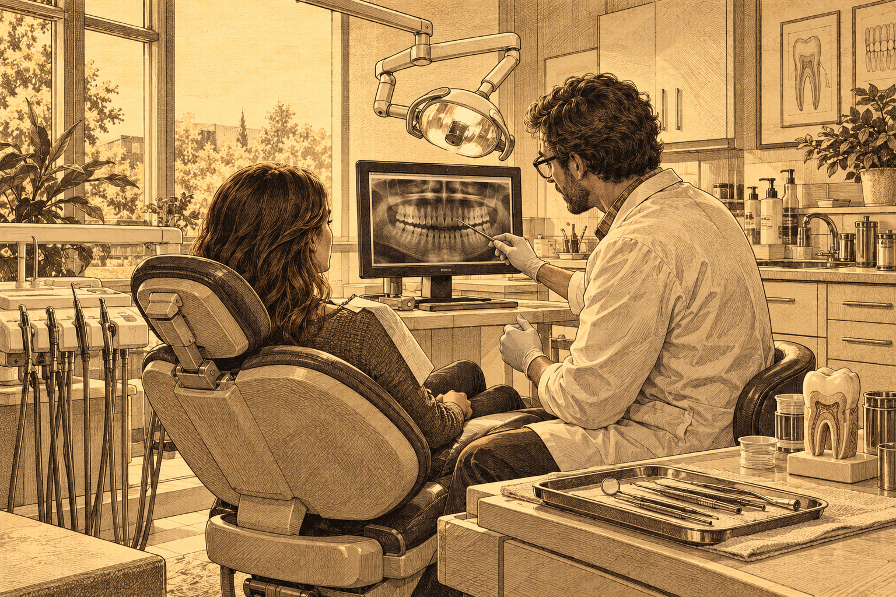

ABHI · UYEN
/ THE READING ROOM
Reading
Practice

Everyday stories · At work
A Day at the
Dental Clinic
▶ Listen
■ Stop
0:00 / 1:44
0.75×
1×
1.25×
VI · OFF
ABHI · UYEN / READ · LISTEN · PRACTISE
Follow & speak
Build with chunks
Listen & type
FOLLOW & SPEAK
Follow the highlight.
Keep your rhythm.
01
Sentence
▶
LISTEN FIRST · OPTIONAL
Follow the phrases as you listen.
0:00
Ready when you are.
0 chunks
Model audio pace
START · 10s READY
PAUSE
RESTART
Model voice · ON
Show meaning
← BACK
CHECK
NEXT →
Hint
Meaning
Clear
Show answer
Reset all
● Record yourself
Your recording stays on this device.
Download recording
×
◖))
I know this
Study